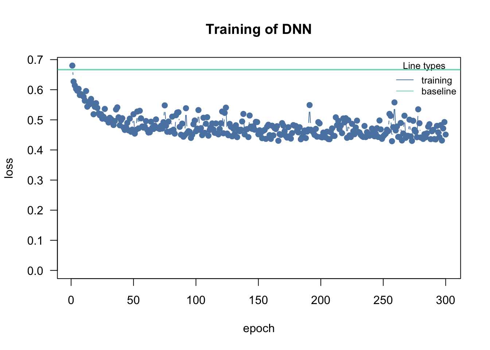

The goal of explainable AI (xAI, aka interpretable machine learning) is to explain why a fitted machine learning model makes certain predictions. A typical example is to understand how important different variables are for predictions. The incentives for doing so range from a better technical understanding of the models over understanding which data is important for improving predictions to questions of fairness and discrimination (e.g. to understand if an algorithm uses skin color to make a decision).
14.1 A Practical Example
In this lecture we will work with another famous data set, the Boston housing data set:
xAI packages are written generic, i.e. they can handle almost all machine learning models. When we want to use them, we first have to create a predictor object, that holds the model and the data. The iml package uses R6 classes, that means new objects can be created by calling Predictor$new(). (Do not worry if you do not know what R6 classes are, just use the command.)
X = Boston[which(names(Boston) !="medv")]predictor = Predictor$new(rf, data = X, y = Boston$medv)# "Predictor" is an object generator.
14.2 Feature Importance
Feature importance should not be mistaken with the random forest variable importance though they are related. It tells us how important the individual variables are for predictions, can be calculated for all machine learning models and is based on a permutation approach (have a look at the book):
imp = FeatureImp$new(predictor, loss ="mae")plot(imp)
14.3 Partial Dependencies
Partial dependencies are similar to allEffects plots for normal regressions. The idea is to visualize “marginal effects” of predictors (with the “feature” argument we specify the variable we want to visualize):
One disadvantage of partial dependencies is that they are sensitive to correlated predictors. Accumulated local effects can be used for accounting for correlation of predictors.
14.4 Accumulated Local Effects
Accumulated local effects (ALE) are basically partial dependencies plots but try to correct for correlations between predictors.
ale = FeatureEffect$new(predictor, feature ="rm", method ="ale")ale$plot()
If there is no collinearity, you shouldn’t see much difference between partial dependencies and ALE plots.
14.5 Friedman’s H-statistic
The H-statistic can be used to find interactions between predictors. However, again, keep in mind that the H-statistic is sensible to correlation between predictors:
14.6 Global Explainer - Simplifying the Machine Learning Model
Another idea is simplifying the machine learning model with another simpler model such as a decision tree. We create predictions with the machine learning model for a lot of different input values and then we fit a decision tree on these predictions. We can then interpret the easier model.
14.7 Local Explainer - LIME Explaining Single Instances (observations)
The global approach is to simplify the entire machine learning-black-box model via a simpler model, which is then interpretable.
However, sometimes we are only interested in understanding how single predictions are generated. The LIME (Local interpretable model-agnostic explanations) approach explores the feature space around one observation and based on this locally fits a simpler model (e.g. a linear model):
The Shapley method computes the so called Shapley value, feature contributions for single predictions, and is based on an approach from cooperative game theory. The idea is that each feature value of the instance is a “player” in a game, where the prediction is the reward. The Shapley value tells us how to fairly distribute the reward among the features.
Use one of the non-image based data sets (preferably Wine, which is also described in the data sets section Appendix A but wasn’t used yet, but you can also use Nasa or Titanic) and fit a random forest. Explore / interpret the fitted model using iml (see also the book: https://christophm.github.io/interpretable-ml-book/).
library(randomForest)library("iml")set.seed(1234)data =as.data.frame(EcoData::wine)submission = data[which(is.na(data$quality)), -which(colnames(data) =="quality")]data = data[complete.cases(data), ] # Removes sumbmission data as well.# Remark: Features don't need to be scaled for regression trees.rf =randomForest(quality ~ ., data = data)pred =round(predict(rf, data))table(pred, data$quality)
# IML:predictor = Predictor$new( rf, data = data[,which(names(data) !="quality")], y = data$quality)# Mind: This is stochastical!importance = FeatureImp$new(predictor, loss ="mae")plot(importance)

# Comparison between standard importance and IML importance:importanceRf =rownames(rf$importance)[order(rf$importance, decreasing =TRUE)]importanceIML = importance$results[1]comparison =cbind(importanceIML, importanceRf)colnames(comparison) =c("IML", "RF")as.matrix(comparison)
Mind that feature importance, and the random forest’s variable importance are related but not equal! Variable importance is a measure for determining importance while creating the forest (i.e. for fitting). Feature importance is a measure for how important a variable is for prediction.
Maybe you want to see other explanation methods as well. Surely you can use the other techniques of this section on your own.
Question
As we show in section Chapter 13 of this chapter, a random forest will split variable importance across collinear predictors, while a linear regression model (lm()) can identify which predictor is causally affecting the response (at least in theory, if all confounders are controlled). What about a boosted regression tree or an artificial neural network? Take the random forest example and add a boosted regression tree (easier, you can use for example https://rdrr.io/cran/xgboost/man/xgb.importance.html) or an artificial neural network, and have a look if those are better than the random forest at identifying causal predictors.
Every method yields slightly different results, but the main ingredient is alcohol (and sulphates).
Bonus Task
If you’re done with the previous tasks and have still time and appetite, improve the submissions for our competition, in particular for the Wine data set. Possible ideas:
Try Transfer learning (section Section 10.4.2). The winner from last years used transfer learning to win the flower competition
Search on kaggle for more ideas / try to copy the ideas. This was the winner two years ago.
A minimal example for the (unbalanced!) Wine data set:
library(tensorflow)library(keras)set_random_seed(123L, disable_gpu =FALSE) # Already sets R's random seed.readin =function(percentageTest =0.2, aggregate =0){# Parameter "aggregate" packs the classes with very low abundances into one.# If "aggregate" equals to NA, NaN, Null, 0 or FALSE, no aggregation is performed.# Else, the given number is the boundary.# Every class with less elements than the boundary is aggregated into one.# WARNING: These classes cannot be distinguished from then on!# Using the predictions for submission needs further processing!# Just for random selection of features, independent of the amount of function calls.set.seed(12345) train =as.data.frame(EcoData::wine) indicesTrain =which(!is.na(train$quality)) labelsTrain = train$quality[indicesTrain] labelsTrain = labelsTrain -min(labelsTrain) # Start at 0 (for softmax). train = train[, -which(colnames(train) =="quality")]if(!is.na(aggregate) & aggregate){ indices =names(table(labelsTrain)[table(labelsTrain) < aggregate &table(labelsTrain) >0 ])if(length(indices)){ labelsTrain[labelsTrain %in% indices] =-1 labelsTrain =as.factor(labelsTrain)levels(labelsTrain) =1:length(levels(labelsTrain)) -1 labelsTrain =as.integer(labelsTrain) } }# Impute missing values (before any splitting, to get the highest power): train = missRanger::missRanger(data = train,maxiter = 10L,seed =123,num.trees = 200L )# Separate submission data (mind scaling!): submission =scale(train[-indicesTrain,]) train =scale(train[indicesTrain,])# Very asymmetric training data:cat(paste0("Size of training set: ", length(labelsTrain), "\n"))print(table(labelsTrain))if(percentageTest ==0){return(list("labelsTrain"= labelsTrain,"labelsTest"=list(),"train"= train,"test"=list(),"submission"= submission )) }# Split into training and test set: len =nrow(train) indicesTest =sample(x =1:len, size = percentageTest * len, replace =FALSE) test =as.data.frame(train[indicesTest,]) labelsTest = labelsTrain[indicesTest] train =as.data.frame(train[-indicesTest,]) labelsTrain = labelsTrain[-indicesTest]return(list("labelsTrain"= labelsTrain,"labelsTest"= labelsTest,"train"= train,"test"= test,"submission"= submission ))}retVal =readin(aggregate =0)labelsTrain = retVal[["labelsTrain"]]labelsTest = retVal[["labelsTest"]]train = retVal[["train"]]test = retVal[["test"]]submission = retVal[["submission"]]rm(retVal)classNumber =length(table(labelsTrain))model =keras_model_sequential()model %>%layer_dense(units = 200L, activation ="leaky_relu",kernel_regularizer =regularizer_l2(0.00035),input_shape =ncol(train)) %>%layer_dropout(0.45) %>%layer_dense(units = 100L, activation ="relu",bias_regularizer =regularizer_l1_l2(0.5)) %>%layer_dropout(0.2) %>%layer_dense(units = 100L, activation ="leaky_relu",kernel_regularizer =regularizer_l2(0.00035),bias_regularizer =regularizer_l1_l2(0.1)) %>%layer_dropout(0.25) %>%layer_dense(units = 50L, activation ="gelu") %>%layer_dense(units = 25L, activation ="elu") %>%layer_dropout(0.35) %>%# We need probabilities. So we use the softmax function.# Remember, the labels MUST start at 0!layer_dense(units = classNumber, activation ="softmax")model %>% keras::compile(loss = loss_binary_crossentropy,optimizer =optimizer_adamax(learning_rate =0.015))model_history = model %>%# Mind the matrix property (no data.frame)!fit(x =as.matrix(train), y =k_one_hot(labelsTrain, classNumber),epochs = 80L, batch = 12L, shuffle =TRUE)plot(model_history)# Accuracy on training set (!)pred =predict(model, as.matrix(train)) %>%apply(1, which.max) -1Metrics::accuracy(pred, labelsTrain)table(pred, labelsTrain)# Accuracy on test setpred =predict(model, as.matrix(test)) %>%apply(1, which.max) -1Metrics::accuracy(pred, labelsTest)table(pred, labelsTest)
Recognize overfitting of your model selection strategy by changing the seed few times (while keeping the model constant) and increase the percentage of test data. Furthermore, consider fitting a random forest for good quality as well.
For the final predictions, we use the whole data set without holdouts:
library(tensorflow)library(keras)set_random_seed(321L, disable_gpu =FALSE) # Already sets R's random seed.retVal =readin(percentageTest =0, aggregate =0)labelsTrain = retVal[["labelsTrain"]]labelsTest = retVal[["labelsTest"]]train = retVal[["train"]]test = retVal[["test"]]submission = retVal[["submission"]]rm(retVal)classNumber =length(table(labelsTrain))model =keras_model_sequential()model %>%layer_dense(units = 200L, activation ="leaky_relu",kernel_regularizer =regularizer_l2(0.00035),input_shape =ncol(train)) %>%layer_dropout(0.45) %>%layer_dense(units = 100L, activation ="relu",bias_regularizer =regularizer_l1_l2(0.5)) %>%layer_dropout(0.2) %>%layer_dense(units = 100L, activation ="leaky_relu",kernel_regularizer =regularizer_l2(0.00035),bias_regularizer =regularizer_l1_l2(0.1)) %>%layer_dropout(0.25) %>%layer_dense(units = 50L, activation ="gelu") %>%layer_dense(units = 25L, activation ="elu") %>%layer_dropout(0.35) %>%# We need probabilities. So we use the softmax function.# Remember, the labels MUST start at 0!layer_dense(units = classNumber, activation ="softmax")model %>% keras::compile(loss = loss_binary_crossentropy,optimizer =optimizer_adamax(learning_rate =0.015))model_history = model %>%# Mind the matrix property (no data.frame)!fit(x =as.matrix(train), y =k_one_hot(labelsTrain, classNumber),epochs = 80L, batch = 12L, shuffle =TRUE)plot(model_history)# Accuracy on training set (!)pred =predict(model, as.matrix(train)) %>%apply(1, which.max) -1Metrics::accuracy(pred, labelsTrain)table(pred, labelsTrain)# Reverse subtraction (for start at 0) and create submission file.write.csv(pred +min(as.data.frame(EcoData::wine)$quality, na.rm =TRUE),file ="wine_NN.csv")